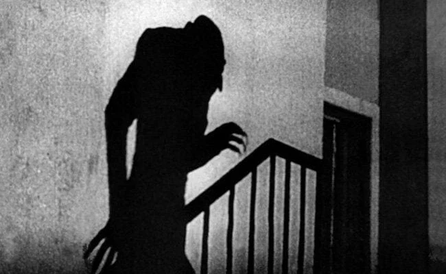

Movies
Horror movies have always evolved by turning the fears of each era into something visual, visceral, and unforgettable. From silent-era experiments to today's psychological and socially aware films, the genre has kept reinventing itself while holding onto the same basic goal: to disturb audiences and make them feel the unknown.
The history of horror cinema can be traced back to the late 19th century, when Georges Méliès made Le Manoir du Diable in 1896. Early horror films were short, theatrical, and dependent on special effects and atmosphere, establishing fantasy as unsettling. Silent classics like The Cabinet of Dr. Caligari and Nosferatu used shadows, distorted sets, and striking imagery in creating dread.

One of the most iconic shots of early horror, Nosferatu.
The 1930s and 1940s became horror's first great golden age. Universal Pictures' monster films, especially Dracula, Frankenstein, The Mummy, and The Wolf Man gave the genre its most iconic figures and helped define the look of classic movie horror. These films often mixed tragedy and terror, making monsters feel frightening and sympathetic at the same time.
In the 1950s, horror changed again under the influence of science fiction and post-war anxieties. Giant creatures, atomic mutation, alien invasion, and Cold War paranoia became common themes, reflecting a world shaped by nuclear fear and rapid technological change. By the 1960s and 1970s, filmmakers were pushing into more psychological and unsettling territory, with films like Psycho and The Exorcist showing horror that could be disturbing without relying on classic monsters.
The late 1970s and 1980s brought an increase to the slasher genre, with masked killers, increasingly creative deaths, and an increased sense of suspense. Franchises such as Halloween and Friday the 13th became cultural icons, while horror also branched into body horror, occult stories, and more extreme practical effects. At the same time, horror grew more self-aware, and films like Scream showed that the genre could critique its own rules while still being entertaining.
From the 1990s into the 21st century, horror movies became even more varied. Found-footage films, supernatural thrillers, and remakes all found mainstream audiences, while later works like Get Out, Hereditary, Midsommar, and Us brought horror into sharper conversation with social issues, family dynamics, and modern identity.
Source:
Wikipedia: Horror Filmhorrorfilmhistory.com